En blogg om god mat
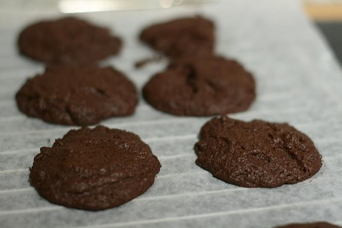
Sjokoladekjeks, Chocolate cookies, sjokoladecookies, eller sjokolade cookies?
Hva kaller man det på norsk?
Det er det største problemet jeg har i forhold til cookies. Ellers elsker jeg den perfekte cookie, som er litt sprø, litt chewy, ikke for tørr og ikke for seig.
Hva er vel deiligere enn nybakte cookies på en høstkveld, gjerne en søndag, med en kopp kaffe eller te til?
Når det gjelder disse kjeksene, er det beste rådet jeg kan gi deg: Ikke stek dem for lenge. De er faktisk ferdige mens de ennå er bløte. Nok om det. Her er oppskriften:
Til to stekebrett med medium cookies, eller et stekebrett store cookies:
2,4 dl hvetemel mel (ca. 140 g mel)
0,6 dl kakao
1 ts bakepulver
240 g mørk kvalitetssjokolade
2 store egg
1 ts vaniljeessens
1 ts pulverkaffe (gjerne espresso)
85 g usaltet smør (mykt, men fortsatt litt kjølig) (BRUK ALLTID USALTET SM�?R N�?R DU SKAL BAKE)
1,7 dl brunt sukker
0,6 dl vanlig sukker
(hele sjokoladebiter, nøtter eller annen dandering er kan du fint legge til)
Vi setter i gang!
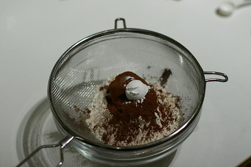
Sikt alle de tørre varene, bortsett fra sukker.
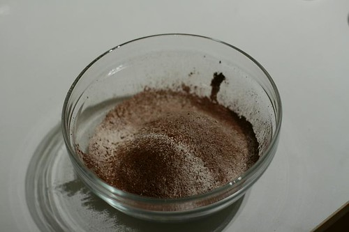
Slik.
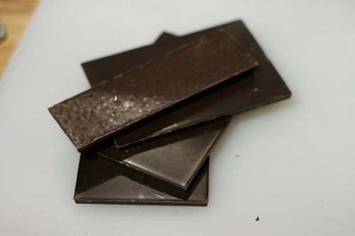
Finn frem kvalitetssjokoladen. Gjerne mørk (70%).
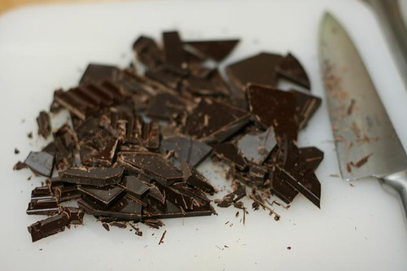
Kutt opp i biter….
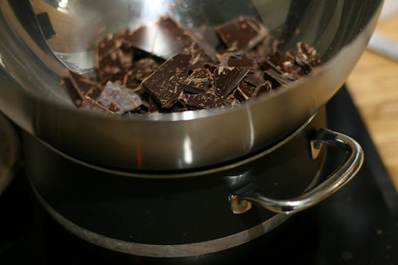
Ha det oppi en metallbolle over en kasserolle med varmt vann og la det begynne å smelte. Rør underveis..
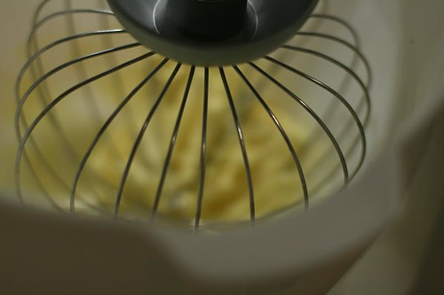
I mellomtiden finner du frem smøret og visper det til….
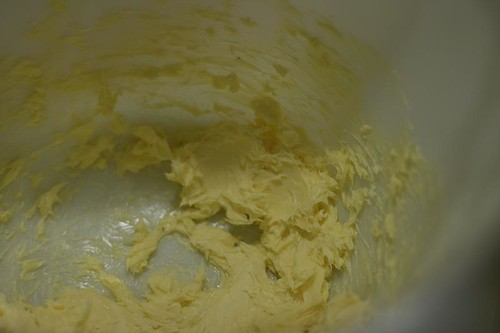
..det får en slik konsistens.
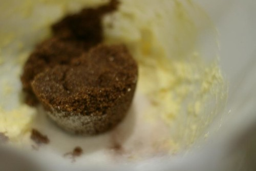
Tilsett sukkeret…
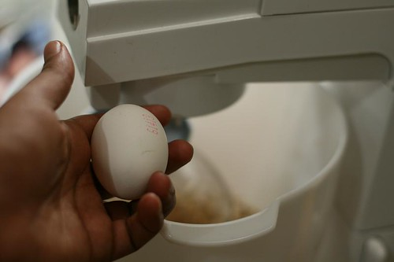
Og Egg.
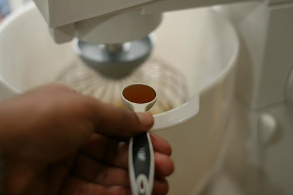
Vaniljeessens.
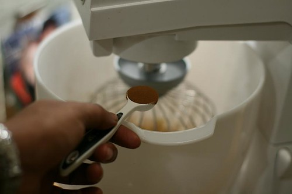
og pulverkaffe…(gjerne espresso)
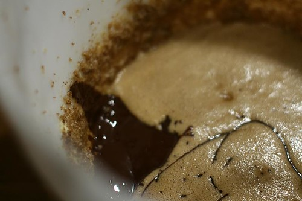
Og tilsett den smeltede sjokoladen…
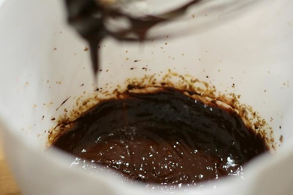
Visp godt!
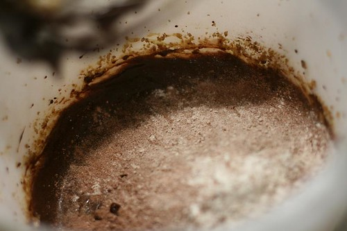
Tilsett de tørre ingrediensene..og rør videre..
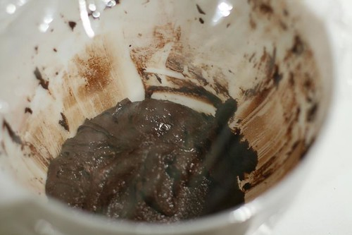
Til slutt får du en fast røre.. La den hvile i 20 min. Nå er du faktisk nesten ferdig.
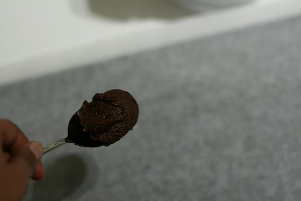
Har du en iskremskje, så finn frem den, for dette kan være litt kronglete med en vanlig skje. Ta en skjefull, og plasser på et stekebrett (som du har dekket til med bakepapir)
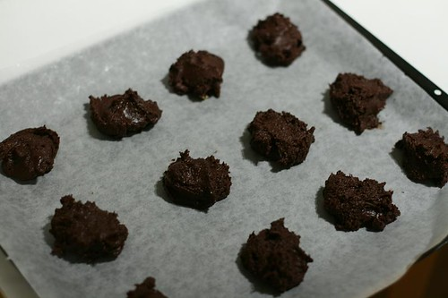
Slik. La det være litt plass mellom hver cookie, for de kommer til å smelte utover…
STEK P�? 175 grader i maks 20 min. Eller helt til kanten rundt cookiene har blitt fast, men midten kan fortsatt være relativt myk. De hardner til når de avkjøles. Tro meg. Steker du for lenge, blir de for tørre.
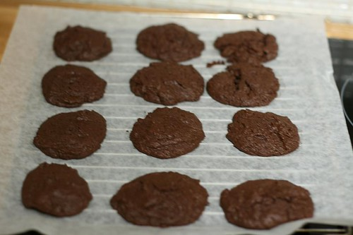
FERDIG!
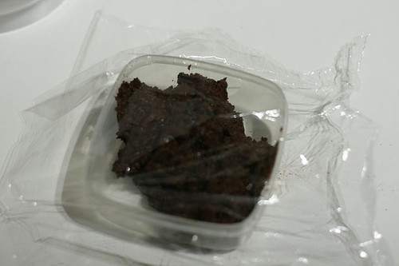
Lag gjerne ekstra mye røre, som du fint kan fryse ned.
Nam! Disse er farlig gode!
Lykke til.
Jeg setter VELDIG stor pris på kommentarer, så legg igjen en kommentar i feltet under. Og spesielt hvis du har innspill til hvordan du lager cookies, slik at vi kanskje kan lage enda bedre cookies enn dette neste gang.
Og hvis du ikke er abonnent på denne på bloggen, som nå over 100 andre er, så anbefaler jeg deg å legge igjen e-postadressen din under, så får du en koselig melding neste gang jeg legger ut en oppskrift.
Bon appetit!
Forresten.. er du glad i sjokolade, anbefaler jeg den denne sjokoladekaken. Den er enkel, enkel, enkel. Og fantastisk god!
Eller tiramisuen som enkelte i kommentarfeltet mener er like god som den på Villa Paradiso. De tar feil. Denne er mye bedre. Lover.